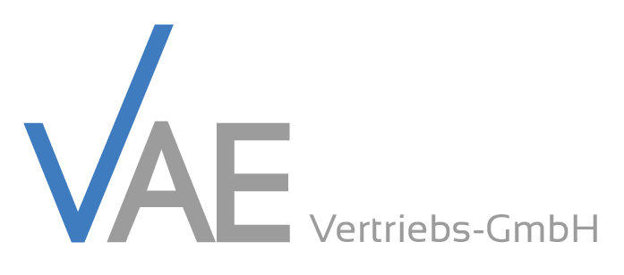

Unternehmensberatung für KMU
Mag. Dr. Sabine Stolz, MSc
Klare Zahlen, tragfähige Finanzierung, passende IT‑Lösungen.
Ich begleite kleine und mittlere Unternehmen in Controlling, Finanzierung, Internationalisierung und ERP-naher IT – kurzzeitig oder langfristig.
„Wer das Ziel kennt, findet seinen Weg!“
Sie haben eine Vision des Erfolgs Ihrer Firma? Nur der Weg dahin ist noch offen? Dann besprechen wir ihn im Orientierungsgespräch.

- 2005Selbständig als Unternehmensberaterin seit
- 19Referenzen aus Wirtschaft und Bildung
- 5Leistungsfelder
- Controlling und FinanzsteuerungPlanung, Steuerung, Reporting und wirtschaftliche Weiterentwicklung.
- FinanzierungenMaßgeschneiderte Finanzierungen für Ihr Vorhaben.
- Internationalisierung und WachstumsbegleitungUnterstützung bei internationalen Herausforderungen, Expansion und organisatorischer Entwicklung.
- ERP-nahe Prozess- und IT-BeratungBetriebswirtschaftliche Anforderungen und praxistaugliche IT-Lösungen zusammenführen.
- Set-up, Training und WissenstransferSet-up, Seminare, Vorträge und Lehraufträge – praxisnah vermittelt.
Kurzprofil
Mag. Dr. Sabine Stolz, MSc
Selbständige Unternehmensberaterin seit 2005. Davor Stationen im Controlling und in der Finanzleitung bei VAE AG, AVL, ZAT und Ceram Catalysts, mit Auslandsaufenthalten in Russland, im Baltikum, in China, den USA, Frankreich und Deutschland.
Seit 2018 zertifizierte Lehrbeauftragte in der Jugend- und Erwachsenenbildung. Sprachen: Englisch, Französisch, Russisch.
Referenzen
Auswahl bisheriger Zusammenarbeit
19 Unternehmen und Institutionen, darunter AVL List GmbH, voestalpine AG, Universität Graz und FH Campus 02.





Orientierungsgespräch
Eine Fragestellung, über die Sie sprechen möchten?
Schildern Sie Ihr Anliegen kurz per Formular oder E-Mail. Im unverbindlichen Orientierungsgespräch klären wir, ob und wie ich Sie unterstützen kann.